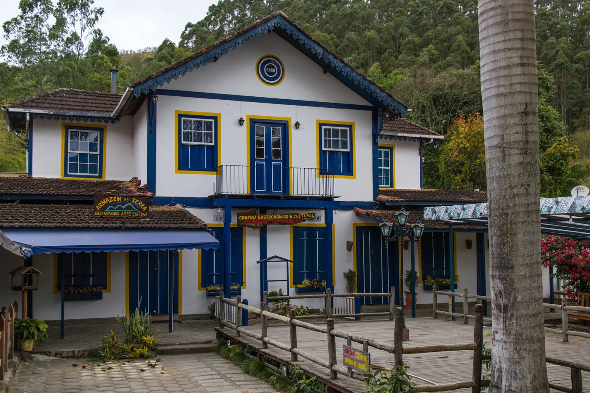
Lumiar e São Pedro da Serra
Vilas de montanha, rios e gastronomia.
Consultar serviços em LumiarFoto: João Luccas Oliveira
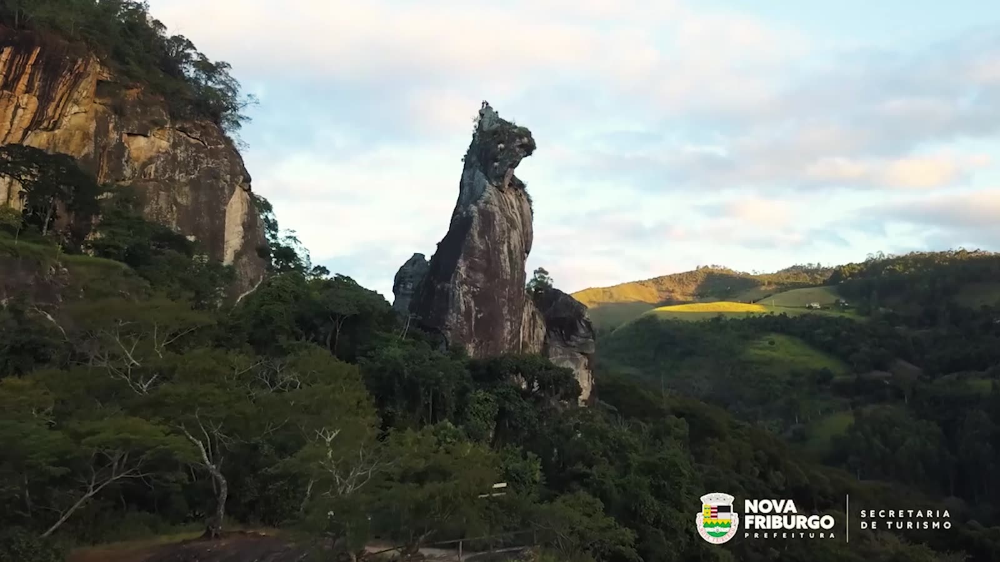
Região Serrana do Rio de Janeiro
Um só lugar, vários destinos.
Do seu jeito
Escolha por onde começar: pelas montanhas, pela mesa ou pelos caminhos da cidade.
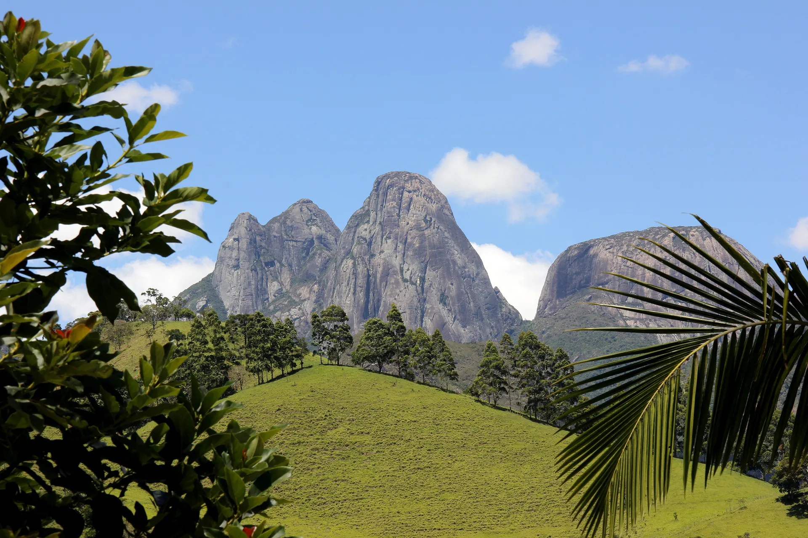
Natureza e aventuraMontanhas, trilhas e cachoeiras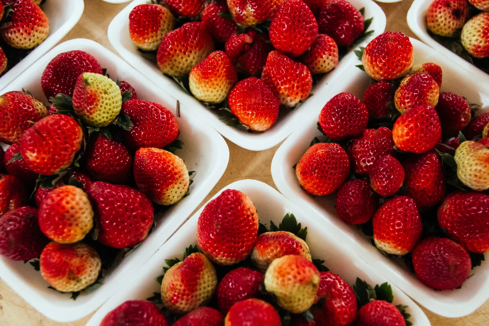
Sabores da serraRestaurantes, cafés e bares Cultura e históriaPraças, vilas e patrimônio
Cultura e históriaPraças, vilas e patrimônio
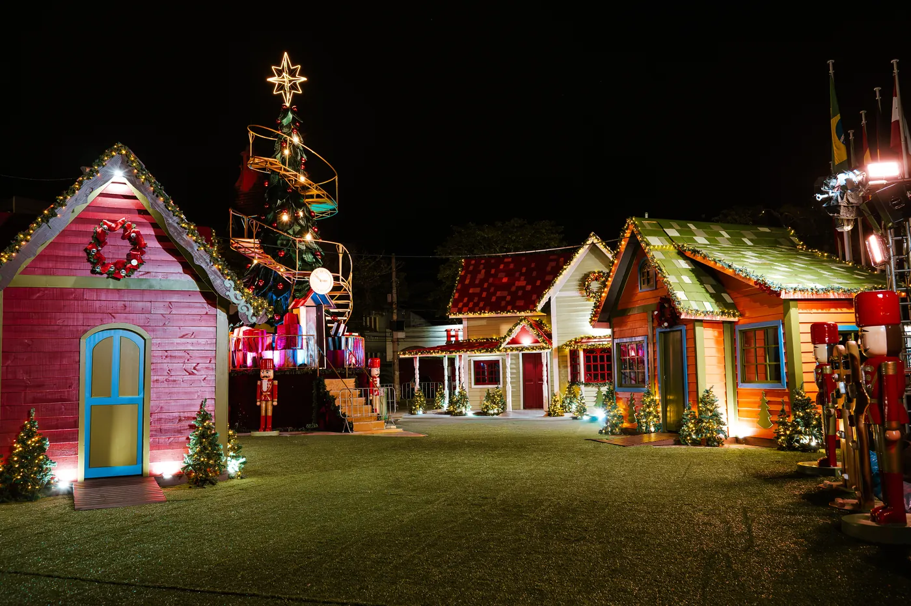
Friburgo em festaEncontros ao longo do anoFotografias: Daniel Marcus, João Luccas Oliveira e acervo da Secretaria de Turismo. Créditos completos no rodapé.
Nascida de um decreto de Dom João VI em 1818 e povoada por suíços a partir de 1819, Nova Friburgo junta montanha, história e um calendário de eventos que atravessa o ano.
Serra.
Granito, mata e água. Os Três Picos, a Pedra do Cão Sentado e o Pico da Caledônia desenham o horizonte. Em Lumiar e São Pedro da Serra, os rios correm entre cachoeiras e poços de água limpa. As trilhas cortam a Mata Atlântica.
Ver os circuitos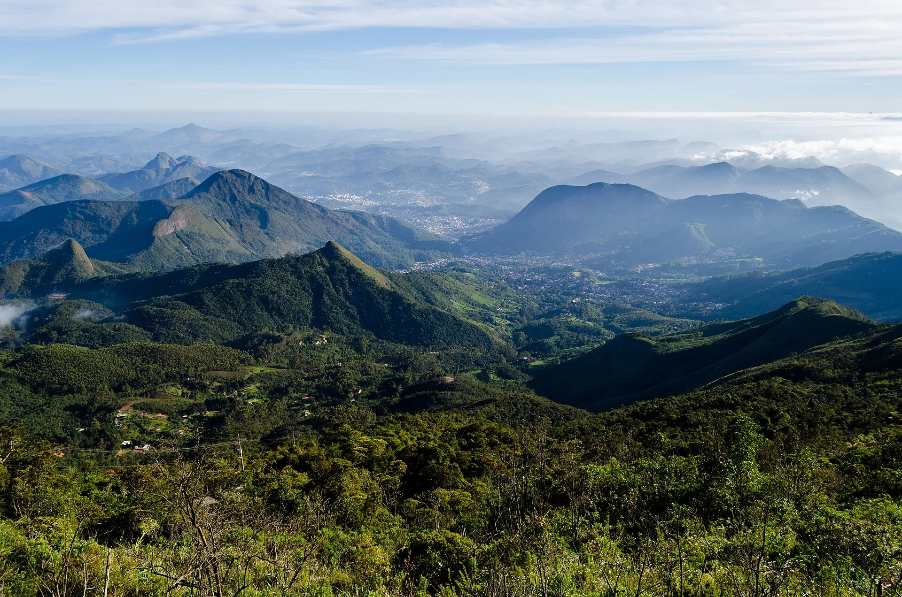
História.
Em 1818, um decreto de Dom João VI criou uma colônia para famílias suíças. Elas chegaram em 1819. Em 1824 vieram os alemães, que fundaram aqui a primeira comunidade luterana do Brasil. Depois vieram italianos, libaneses, japoneses, espanhóis e outros povos: Nova Friburgo se reconhece como a cidade das dez nações. Essa mistura está nas praças, nos casarões e na mesa.
Conhecer a história
Encontros.
Nova Friburgo tem motivo para voltar o ano todo. O Encanto de Natal ilumina o fim do ano com desfiles. No Carnaval, as escolas de samba tomam a Avenida Alberto Braune. O inverno, de junho a agosto, traz programação no Centro, em Mury, Lumiar e São Pedro da Serra. E todo 16 de maio a cidade comemora o aniversário com desfile cívico.
Ver a agenda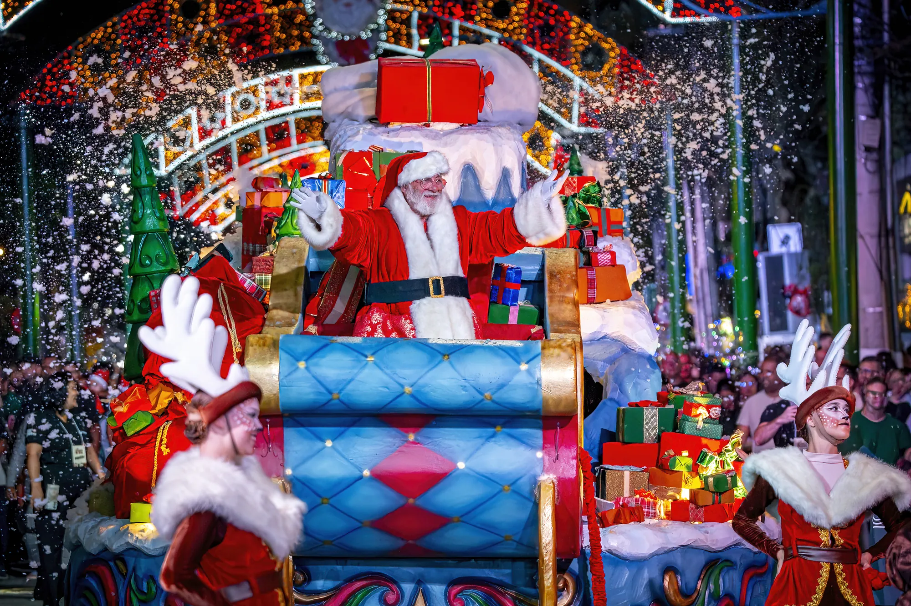
A serra
Role devagar. A linha segue o contorno das montanhas como ele aparece no fim da tarde.
Ao entardecer, a serra vira silhueta.
Pedra do Imperador · Foto: João Luccas Oliveira
Destaques
Lugares que contam a cidade: da pedra mais conhecida às estufas de flores e à cozinha de herança suíça.
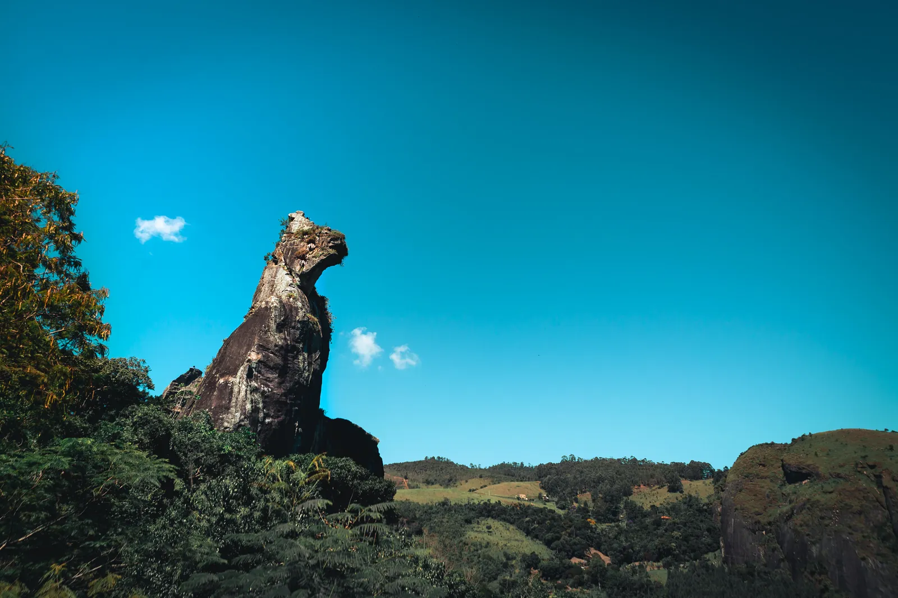
A formação de pedra que parece um cão olhando o vale, no Parque Ecológico do Cão Sentado.
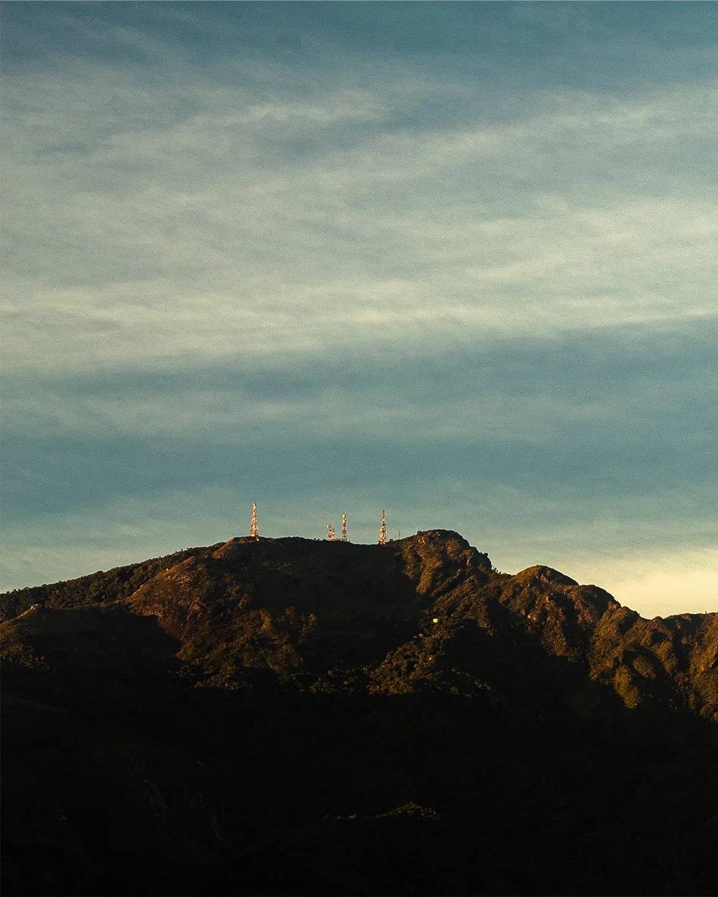
Mirante sobre a cidade e os vales.
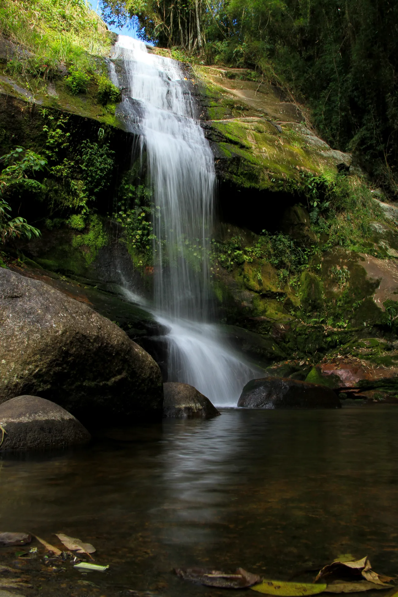
Água entre pedras e mata, na Cascatinha.

Estufas de flores de corte, com fileiras de cor do chão ao teto.

Arquitetura e sabores que lembram a origem da cidade, no circuito Terê-Fri.
Produção rural que vai do campo para a mesa.
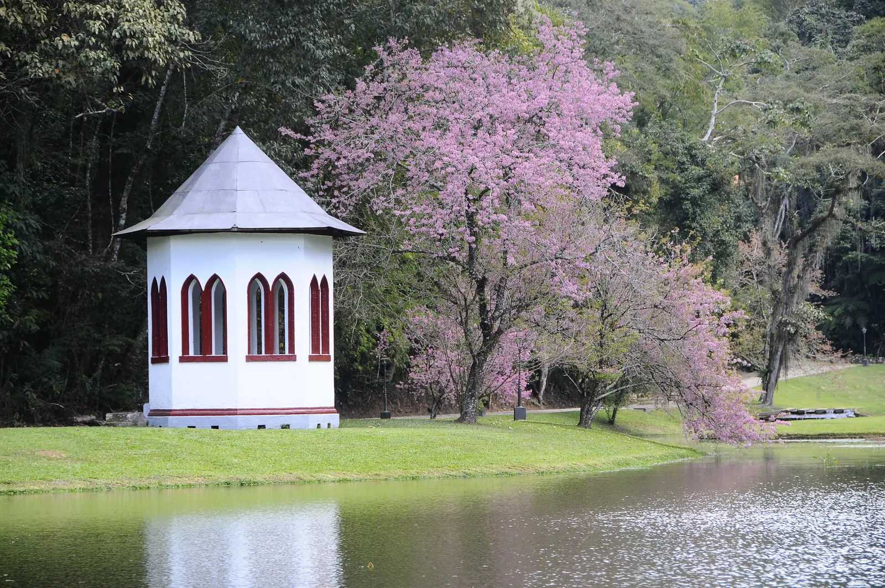
Circuitos turísticos oficiais
Vilas de montanha, roça, flores, cerveja, vinho e o Centro a pé. Abra um circuito para ver as paradas e traçar a rota.
Encontre em Nova Friburgo
Consulte hospedagens, restaurantes, agências, guias e outros serviços. Abra a ficha para encontrar o contato e o endereço comercial.
Contatos e informações para sua visita
Fonte: Cadastur, segundo trimestre de 2026, a partir do arquivo fornecido à Secretaria. São 239 registros por atividade, agrupados em 194 CNPJs. O catálogo não abrange toda a oferta da cidade. Confirme funcionamento e serviços diretamente com o estabelecimento.
Escolha um caminho
Encontre lugares para comer e se hospedar nas vilas, no Centro e nas estradas da serra.

Vilas de montanha, rios e gastronomia.
Consultar serviços em LumiarFoto: João Luccas Oliveira
Produção rural e referências da colonização suíça.
Consultar serviços na regiãoAcervo Secretaria de Turismo
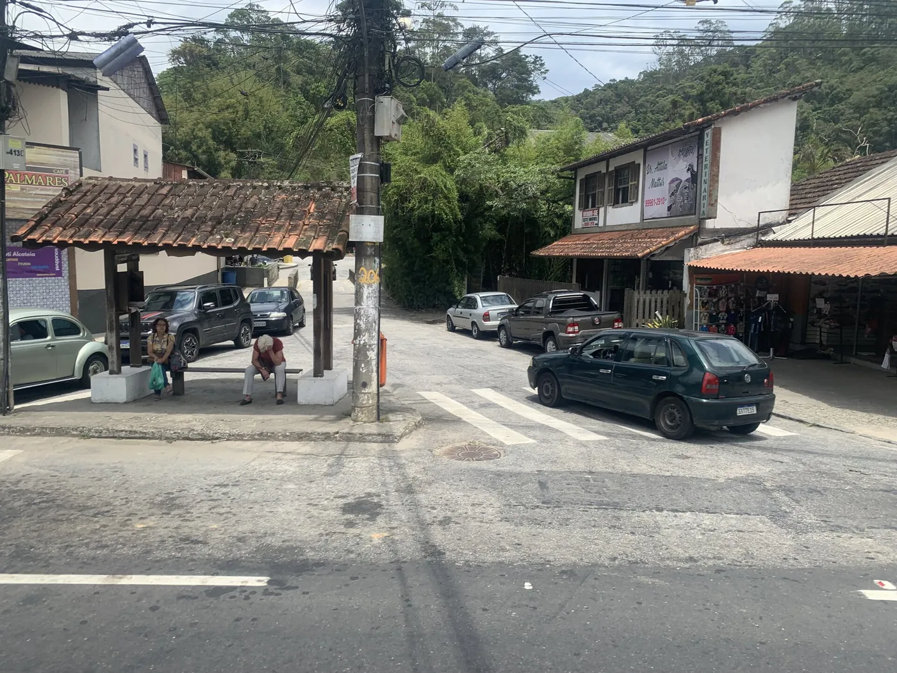
Hospedagens e sabores entre as montanhas.
Consultar serviços em MuryFoto: Vitorperrut555 · CC BY 4.0
O ano em festa
Datas oficiais quando confirmadas; o que ainda depende de organização aparece como “a confirmar”.
6 nov 2026 — 3 jan 2027
Desfile natalino temático e Casa Sensorial. Datas dos desfiles e espetáculos a confirmar. @umencantodenatalnf
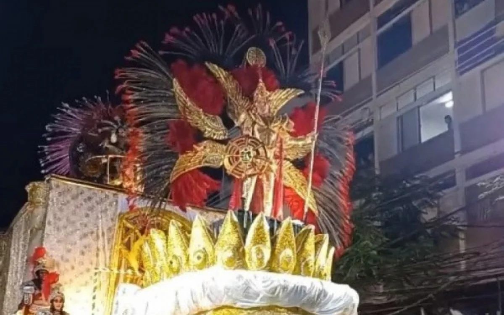
Fevereiro de 2027 · a confirmar
Os desfiles das escolas de samba acontecem na Avenida Alberto Braune, a passarela do samba friburguense.
Desfile das escolas de samba · Foto: crédito a confirmar

Junho a agosto
Programação no Centro, em Mury, Lumiar e São Pedro da Serra.
Teleférico do Suspiro na neblina · Foto: Daniel Marcus
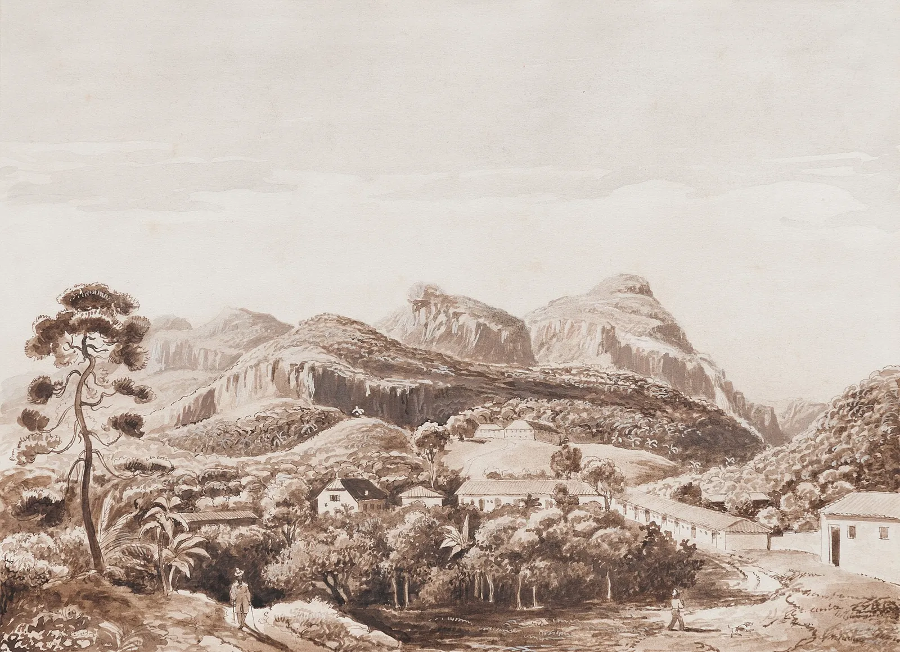
16 de maio
Em 16 de maio de 1818, um decreto de Dom João VI criou a colônia. Vieram suíços, alemães e, depois, gente de outras oito nações.
Coleção Brasiliana Iconográfica · Domínio público
E o resto do ano
A história de Nova Friburgo
1824
Em 3 de maio de 1824, imigrantes alemães evangélicos chegaram à vila com o pastor Friedrich Oswald Sauerbronn e fundaram a primeira comunidade luterana do Brasil. Antes deles, em 1819, vieram os suíços de Fribourg.
Conhecer a história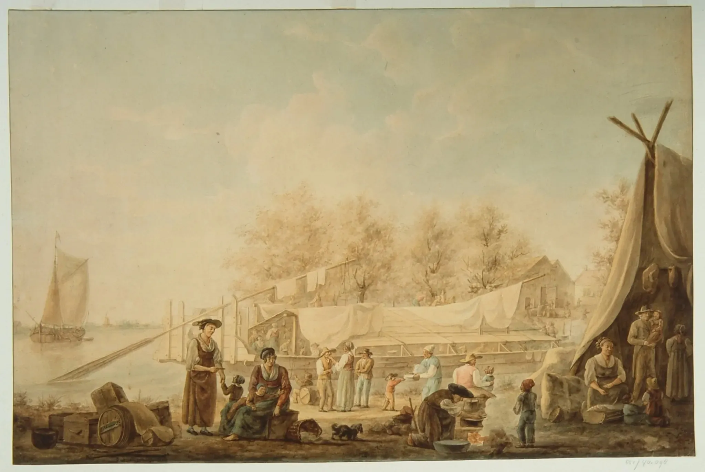
Oito distritos
Cada distrito tem seu ritmo: o centro urbano, as vilas de montanha, as estradas de produção rural.

 1875
1875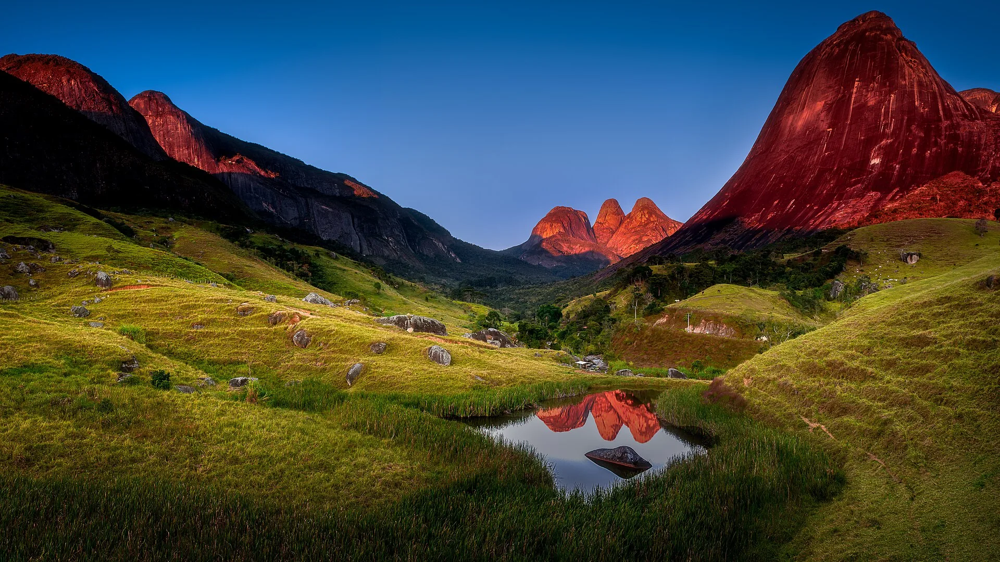

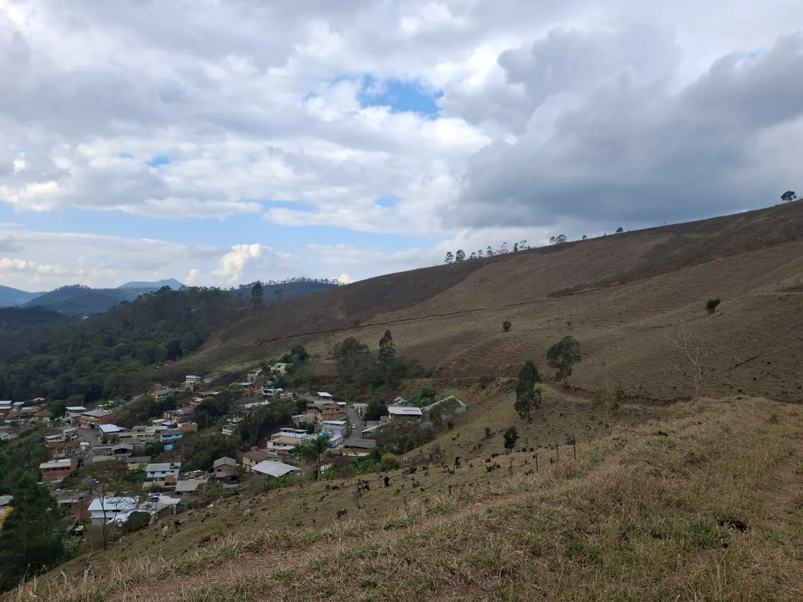
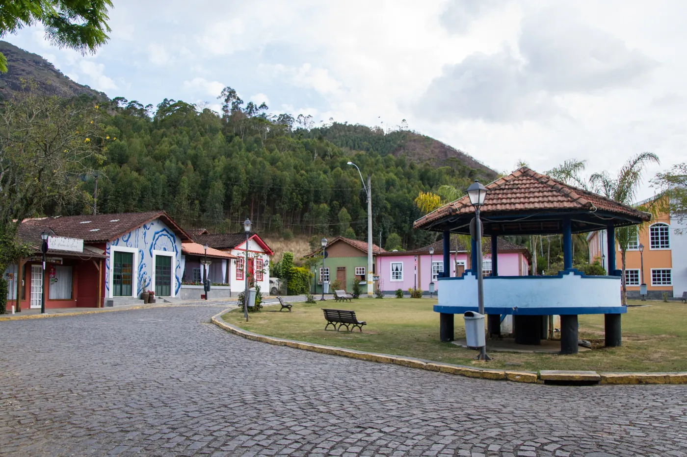
Divisão administrativa conforme a Lei Municipal 4.692/2019. Riograndina: vale e estação no Rio Grande, Henschel & Benque, c. 1875, acervo da Biblioteca Nacional.
Durante sua visita
Consulte o trajeto até Nova Friburgo e confira as condições da estrada antes de sair.
Consultar trajeto no mapaConfira a previsão do tempo, as condições de acesso e as orientações do responsável pelo local. Consulte guias para atividades que precisam de acompanhamento.
Consultar guias de turismoAcompanhe os canais da Secretaria para informações institucionais e atualizações sobre a cidade.
Secretaria de TurismoNova Friburgo te espera
Parque Estadual dos Três Picos · Foto: Daniel Marcus